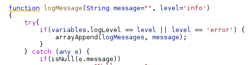
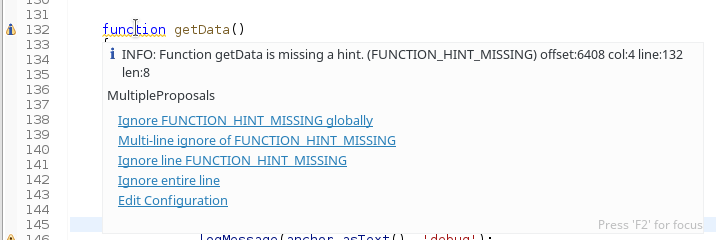
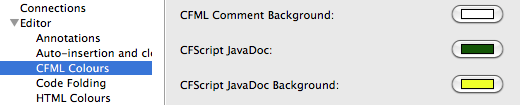
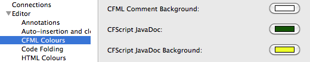

What's New in CFEclipse 1.5.3
The major changes
The mxunit.org domain is no more. The Eclipse update sites are now hosted on cfeclipse.org/mxunit/update and cfeclipse.org/mxunit/update-dev (stable and dev, respectively).
We've switched to using TextMate (tm4e) grammars for handling the syntax color. The idea is to try to standardize (see https://github.com/ilich/vscode-coldfusion and https://github.com/jcberquist/sublimetext-cfml) across IDEs. As a bonus this also lets us leverage Eclipse theme stuff, e.g. light and dark.
This release adds hover-assist stuff to the editor, which lets us do things like provide QuickFixes and rich text (colors and links and such) inside hovers.
New Features
|
Color |
We've switched to using TextMate (tm4e) grammars for handling the syntax color. It's still a bit rough,
but on the whole, with the themes, and having it color mixed tags/script fine (hard bug to fix with our previous implementation), it's
at least a wash, if not an improvement.
 |
|
QuickFix |
Initial implementation of Quick Fixes. Currently only a few for CFLint are available.
Still needs quite a bit of fleshing out. (As in, the global ignore is broken, and some ignores seem to be ignored, but hey-- Excelsior!)
 |
|
More Folding! |
Several more tag options have been added to code-folding. |


 
